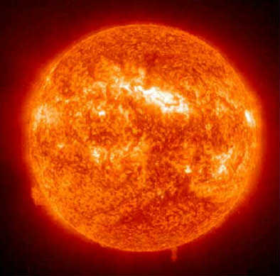

- sol
- mercurio
- venus
- tierraluna
- marte
- meteoritos
- jupiter
- saturno anillos
- urano
- nepturno
- pluton
-
Sol
1.El término musicoterapia, según La Federación Mundial de Musicoterapia, se refiere al uso de la música y/o sus elementos (sonido, ritmo, melodía, armonía) realizado por un musicoterapeuta calificado con un paciente o grupo, en un proceso creado para facilitar, promover la comunicación, las relaciones, el aprendizaje, el movimiento, la expresión, la organización y otros objetivos terapéuticos relevantes.
-
Mercurio
2.El término musicoterapia, según La Federación Mundial de Musicoterapia, se refiere al uso de la música y/o sus elementos (sonido, ritmo, melodía, armonía) realizado por un musicoterapeuta calificado con un paciente o grupo, en un proceso creado para facilitar, promover la comunicación, las relaciones, el aprendizaje, el movimiento, la expresión, la organización y otros objetivos terapéuticos relevantes.
-
Venus
3.El término musicoterapia, según La Federación Mundial de Musicoterapia, se refiere al uso de la música y/o sus elementos (sonido, ritmo, melodía, armonía) realizado por un musicoterapeuta calificado con un paciente o grupo, en un proceso creado para facilitar, promover la comunicación, las relaciones, el aprendizaje, el movimiento, la expresión, la organización y otros objetivos terapéuticos relevantes.
-
Tierra
4.El término musicoterapia, según La Federación Mundial de Musicoterapia, se refiere al uso de la música y/o sus elementos (sonido, ritmo, melodía, armonía) realizado por un musicoterapeuta calificado con un paciente o grupo, en un proceso creado para facilitar, promover la comunicación, las relaciones, el aprendizaje, el movimiento, la expresión, la organización y otros objetivos terapéuticos relevantes.
-
Marte
5.El término musicoterapia, según La Federación Mundial de Musicoterapia, se refiere al uso de la música y/o sus elementos (sonido, ritmo, melodía, armonía) realizado por un musicoterapeuta calificado con un paciente o grupo, en un proceso creado para facilitar, promover la comunicación, las relaciones, el aprendizaje, el movimiento, la expresión, la organización y otros objetivos terapéuticos relevantes.
-
Jupiter
6.El término musicoterapia, según La Federación Mundial de Musicoterapia, se refiere al uso de la música y/o sus elementos (sonido, ritmo, melodía, armonía) realizado por un musicoterapeuta calificado con un paciente o grupo, en un proceso creado para facilitar, promover la comunicación, las relaciones, el aprendizaje, el movimiento, la expresión, la organización y otros objetivos terapéuticos relevantes.
-
Saturno
7.El término musicoterapia, según La Federación Mundial de Musicoterapia, se refiere al uso de la música y/o sus elementos (sonido, ritmo, melodía, armonía) realizado por un musicoterapeuta calificado con un paciente o grupo, en un proceso creado para facilitar, promover la comunicación, las relaciones, el aprendizaje, el movimiento, la expresión, la organización y otros objetivos terapéuticos relevantes.
-
Urano
8.El término musicoterapia, según La Federación Mundial de Musicoterapia, se refiere al uso de la música y/o sus elementos (sonido, ritmo, melodía, armonía) realizado por un musicoterapeuta calificado con un paciente o grupo, en un proceso creado para facilitar, promover la comunicación, las relaciones, el aprendizaje, el movimiento, la expresión, la organización y otros objetivos terapéuticos relevantes.
-
Nepturno
9.El término musicoterapia, según La Federación Mundial de Musicoterapia, se refiere al uso de la música y/o sus elementos (sonido, ritmo, melodía, armonía) realizado por un musicoterapeuta calificado con un paciente o grupo, en un proceso creado para facilitar, promover la comunicación, las relaciones, el aprendizaje, el movimiento, la expresión, la organización y otros objetivos terapéuticos relevantes.
-
Pluton
10.El término musicoterapia, según La Federación Mundial de Musicoterapia, se refiere al uso de la música y/o sus elementos (sonido, ritmo, melodía, armonía) realizado por un musicoterapeuta calificado con un paciente o grupo, en un proceso creado para facilitar, promover la comunicación, las relaciones, el aprendizaje, el movimiento, la expresión, la organización y otros objetivos terapéuticos relevantes.